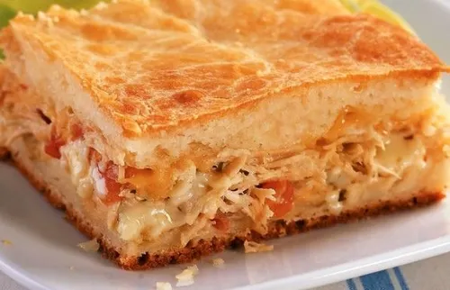

Manteiga gelada
Os pedacinhos de manteiga derretem no forno e soltam vapor, que cria camadas leves e crocantes.
Massa amanteigada que esfarela e recheio cremoso de frango, milho, ervilha e mussarela.

de descanso na geladeira, enquanto você faz o recheio.
Recheio quente derrete a manteiga da massa. Espere amornar antes de montar.
Forre uma forma de 26 cm com cerca de 2/3 da massa, espalhe o recheio e cubra com o restante. Sele as bordas, fure o centro com um garfo e pincele a gema.
Os pedacinhos de manteiga derretem no forno e soltam vapor, que cria camadas leves e crocantes.
Mexer demais desenvolve o glúten e deixa a massa dura. Por isso ela só é misturada até se juntar.
As proteínas e a gordura da gema escurecem com o calor e dão cor e brilho à torta.
Ele deixa o vapor do recheio escapar e evita que a tampa estufe ou rache.
O requeijão cremoso é um queijo típico do Brasil e deixa o recheio macio e fácil de fatiar.
Tortas de massa recheadas com carne e legumes fazem parte da culinária europeia há séculos.
Essa foi a receita que nos do grupo de proteinas escolhemos.